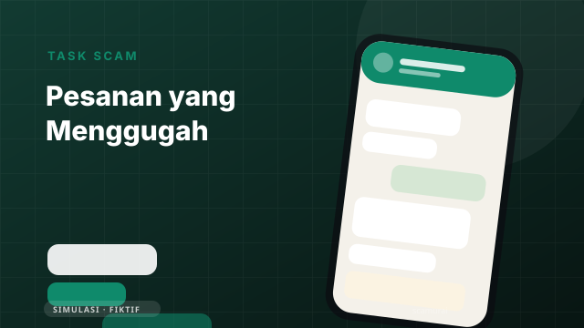
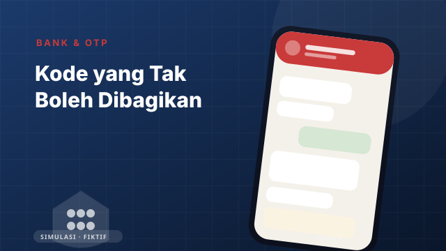
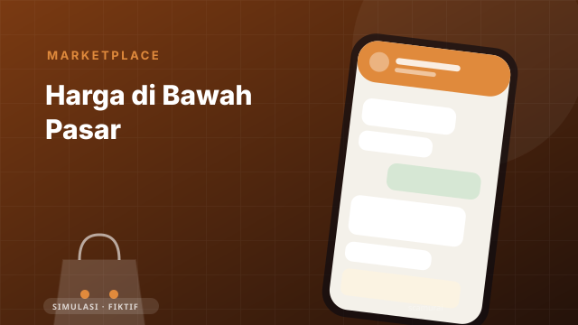
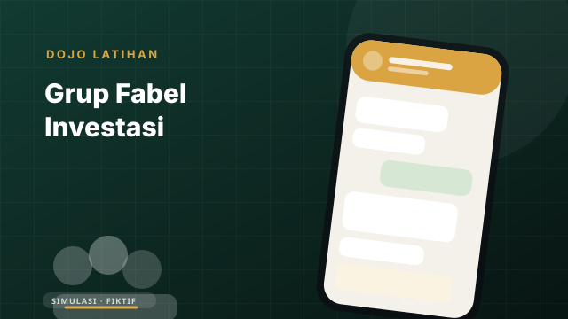

Tempat kamu boleh salah — sebelum salahnya mahal.
Latih instingmu melawan penipuan di dalam ponsel tiruan. Semua uang palsu, semua nomor palsu, tidak ada data yang dikirim ke mana pun.
Gratis, tanpa akun, bisa offline. Progres hanya tersimpan di perangkatmu. Sertifikat edukasi komunitas — bukan sertifikasi resmi.

Pilih latihanmu
Lihat semua 13 skenario →
Komisi kecil yang benar-benar dibayar, lalu paket beruntun yang menuntut deposit. Pola klasik yang menyerang rasa percaya dan keserakahan.
Baru
Telepon dari “petugas bank” soal transaksi mencurigakan, lalu permintaan OTP untuk membatalkannya. Satu digit bisa menguras tabungan.
BaruPinjaman cair lima menit dengan bunga “0%”. Yang tidak tertulis: izin kontak, pencairan kurang, dan teror ke seluruh daftar kontakmu.
Baru
Barang incaran 40% lebih murah, penjual buru-buru memindahkan transaksi ke chat pribadi dan mengirim tautan checkout palsu.
Baru
Empat hari dalam grup “Fabel Trading VIP”: testimoni profit, admin yang ramah, akun-akun pemanas suasana, dan satu suara skeptis yang dibungkam.
Observasi grup · tanpa saldoGlosarium singkat
Istilah yang muncul di skenario, dalam bahasa sehari-hari.
Pesan atau halaman yang menyamar sebagai pihak resmi untuk mengambil data atau uang.
Kode sekali pakai yang menyelesaikan transaksi. Tidak pernah dibagikan, termasuk kepada “petugas bank”.
Dana ditahan platform sampai barang diterima. Transaksi di luar platform kehilangan perlindungan ini.
Orang yang meminjamkan rekening untuk menerima dan meneruskan uang kejahatan.
Pinjaman online tanpa izin OJK, sering meminta akses kontak dan meneror saat penagihan.
Tanda bahaya dalam pesan atau situasi yang sebaiknya diperiksa sebelum bertindak.